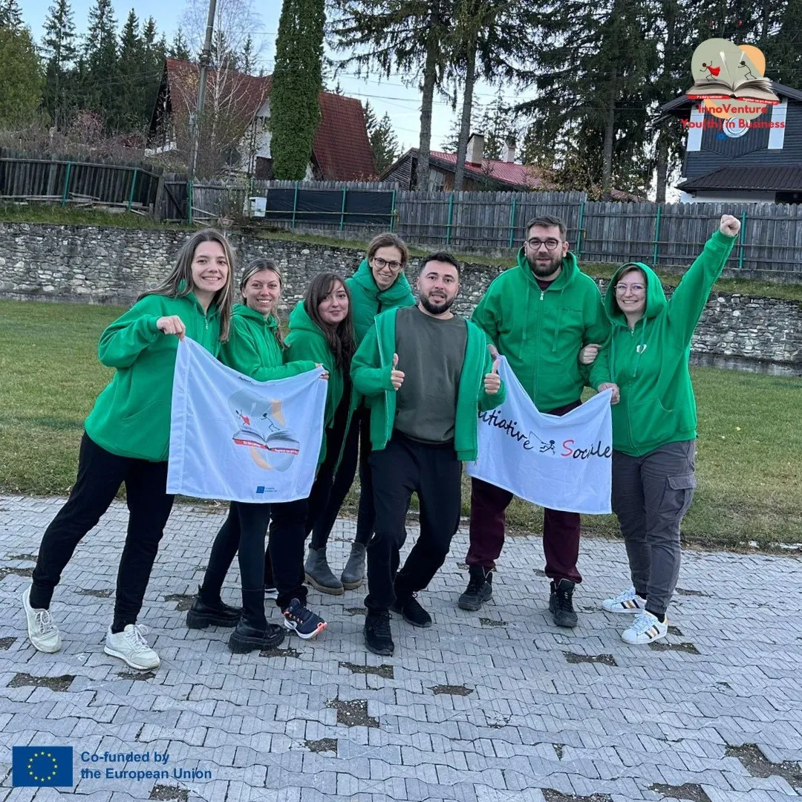
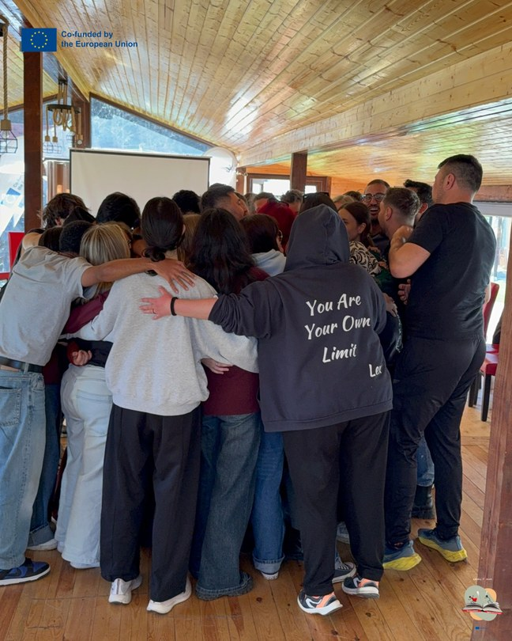
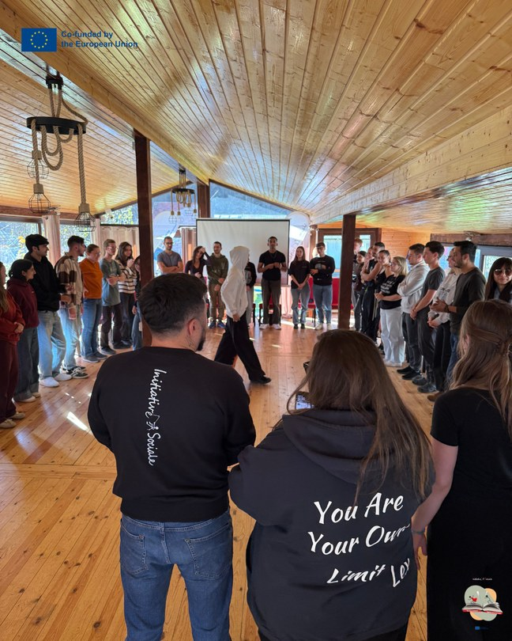

LevelUP · connecting Erasmus+ learning with professional realities
Ready4Work
Ready for Work
Ready for your first job? After days full of practical challenges and meetings with people from the field, the answer becomes yes.



OCT 2025LevelUP
Description
In the third year, through LevelUP, AIS implemented activities dedicated to the community, career guidance and planning one's own path. Participants worked hands-on, collaborated in international teams and connected the Erasmus+ experience with local, community and professional realities.
Participants developed communication, teamwork, critical thinking, reflection, self-confidence, initiative, adaptability, intercultural cooperation and the ability to plan their educational and professional future more consciously.
- Dates
- 23 October – 2 November 2025
- Place
- Argestru, Vatra Dornei, Romania
- Theme
- Career guidance, communication, preparation
- Framework
- AIS Erasmus+ Accreditation
- Stage
- Year 3
- Programme
- LevelUP
- Erasmus+ project
- 2025-1-RO01-KA151-YOU-000299424
12Photos
Photos · Ready4Work
OCT 2025From the project sheet
Empowering Young People for the Future of Work
people
countries
young participants
young people with fewer opportunities
Nine days of activities, 45 people, 7 countries and one big question: are you ready for your first job? From 23 October to 2 November 2025, AIS brought the youth exchange “LevelUP: Ready4Work” to Argestru, near Vatra Dornei – the sixth mobility of our Erasmus+ accreditation.
Young people came from Czechia, Greece, Hungary, Italy, Lithuania, Poland and Romania: 36 participants, 7 group leaders and 2 facilitators. And 22 of the young people – more than half – had fewer opportunities. Because a good start to your career shouldn’t depend on where you start from.
The goal was simple: young people going home better prepared and more confident for the job market. No boring lectures – just workshops, simulations, role play, debates, forum theatre and lots of work in international teams.
Each country brought a picture of its own job market (Ready4Work in My Country). Then came the hands-on part: finding out what we’re good at, rewriting our CVs (Your CV, Your Story) and getting ready for interviews (Interview Checklist).
The most awaited moment? The Job Fair, a simulated job fair: 6 participants were recruiters for a day, while the others went through real interviews and got personal feedback.
We also got out of the room: we visited the Aqua Carpatica factory and Vatra Dornei City Hall to see what real work looks like, in a company and in public administration. Intercultural evenings, a city tour and sessions on Erasmus+ and Youthpass completed the experience.
The young people created things they can use from tomorrow:
- 7 presentations on the job market in each country.
- New or improved CVs and an interview kit.
- 1 simulated job fair, with recruiters and candidates.
- 6 Ready4Oscars short films, although we had only planned 5.
- 1 brochure, photos, videos and testimonials.
- 7 national reports on how the results were shared.
The films talk about unemployment, the race for a job, bullying at work, how to look for a job and how to have a life outside work too.
Along the way, the participants practised communication, creativity, critical thinking, adaptability, teamwork and digital tools. And Youthpass officially recognised everything they learned.
AIS coordinated everything together with the 6 partner organisations. We stayed at Pensiunea Siady in Argestru, and the AIS team, the facilitators and the group leaders were with the young people every day.
We prepared the activities in advance, asked for feedback at the start, halfway and at the end, and made sure everyone felt safe, included and heard.
After the mobility, 42 participants told us how it went. In short: they loved it.
- 4.81 out of 5 – their score for the Erasmus+ experience.
- 4.50 out of 5 – how much it helped them grow personally.
- 83.3% (35 of 42) felt they had changed for the better.
- 97.6% (41 of 42) feel better prepared for getting a job.
- 100% (42 of 42) feel more confident in interviews after the Job Fair.
- 95.2% (40 of 42) improved their CV in the workshops.
- 97.6% (41 of 42) understood real working life better after the study visits.
- 100% (42 of 42) want to take part in projects like this again.
The group leaders were thrilled too: 6 of 7 were “Very satisfied” and one “Rather satisfied”. Our partners gave us 5/5 for working with AIS and 4.83/5 for the organisation and programme – and they all want to keep going together.
Our favourite part: what happened after the young people got home. Of the 42 who answered:
- 6 got a full-time job;
- 2 got a part-time job;
- 4 were invited to at least one real interview;
- 1 found an internship or volunteering opportunity;
- 4 are actively looking for work.
That’s 8 young people (19%) who started working after Ready4Work. We’re not saying it was all thanks to the project – but we’re thrilled to have been part of their journey.
Back home, the participants became storytellers themselves: 8 sessions in the 7 countries, with 140 people taking part.
- Romania: in Craiova on 13 November 2025, Adriana and Minodora talked to 20 volunteers, and on 8 November 2025 Olivia presented the project to 20 students at a youth centre.
- Poland: 30 year 8 pupils at a school in Łódź (27–28 November 2025), with a creative workshop on what you need on the job market.
- Hungary: 22 social work students at the University of Pécs, with CV tips and the film Work Fight Club.
- Italy: 20 students at the University of Trieste, curious about Erasmus+ and non-formal education.
- Lithuania: 11 students aged 17–18 at the Art School of Panevėžys, on CVs, interviews and youth unemployment.
- Greece: 9 students at Tutoring Center Alpha who are preparing for university entrance exams.
- Czechia: 8 students at Lingua Centrum in Olomouc on 18 November 2025.
That’s how Ready4Work reached even more young people – and maybe convinced them to try an Erasmus+ experience too.
Ready4Work showed that non-formal education really works: 45 people from 7 countries, 22 young people with fewer opportunities, 6 films, 8 jobs found and 140 people who heard the story afterwards.
And we’re only getting started. We keep investing in young people, in inclusion and in the skills they need for the future they want.
The story continues! Together we are stronger!